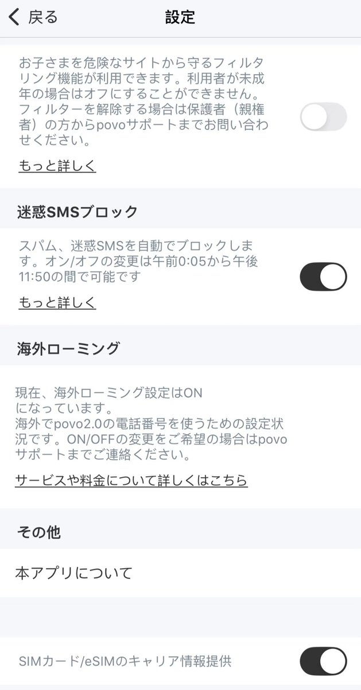
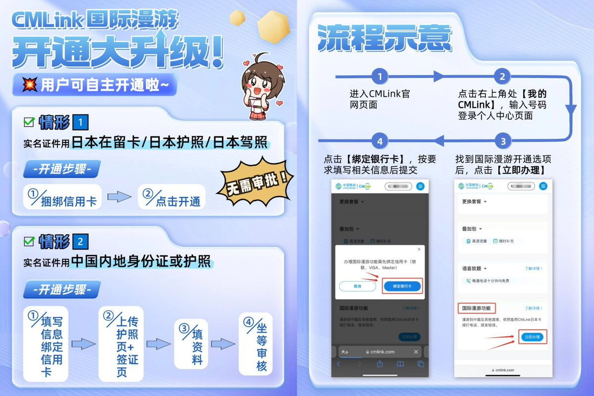
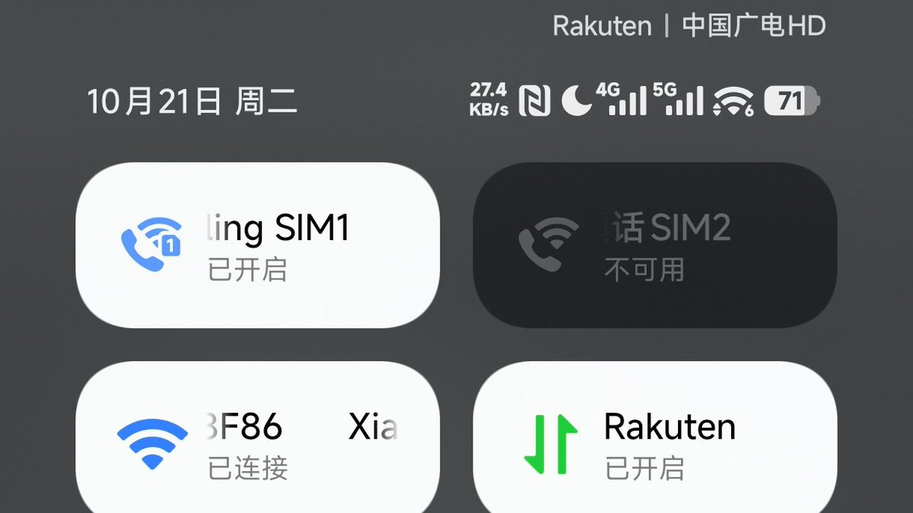

日本电话卡的保号推荐可以说这已经是一个老生常谈的话题了，相信大多数人都没有在留卡，总之一帖把+81号码的事情讲清楚
首先说一下有在留卡的，比如你有一个在日本定居的朋友，让他给你开个povo并找客服开通海外漫游，每个在留卡能开好几张，不过6个月内一定要有消费记录，不然会自动销号
其次是没有在留卡，但有长期旅游签（如三年多次），可办理CMLink JP在日激活并找客服开通国际漫游功能，但只提供漫游短信和语音，不提供漫游流量上网服务。除此之外，还有CUniq JP的套餐，去年10月还能在CN云开后面就再也没开过了…… 有些车一旦错过就没了
最后就是乐天的Rakuten Calendar，只能收短信和漫游上网，不可打电话、发短信。无需KYC，无需在留卡，eSIM卡无需邮寄，随便找个日本地址填上即可。下单价5980JPY即为一年费用，比ifmobile便宜。
原生日本号码，本地流量3G， 漫游流量1G，漫游流量可在中国大陆使用，超出后限速200kbps，购买方式见评论区。
首先说一下有在留卡的，比如你有一个在日本定居的朋友，让他给你开个povo并找客服开通海外漫游，每个在留卡能开好几张，不过6个月内一定要有消费记录，不然会自动销号
其次是没有在留卡，但有长期旅游签（如三年多次），可办理CMLink JP在日激活并找客服开通国际漫游功能，但只提供漫游短信和语音，不提供漫游流量上网服务。除此之外，还有CUniq JP的套餐，去年10月还能在CN云开后面就再也没开过了…… 有些车一旦错过就没了
最后就是乐天的Rakuten Calendar，只能收短信和漫游上网，不可打电话、发短信。无需KYC，无需在留卡，eSIM卡无需邮寄，随便找个日本地址填上即可。下单价5980JPY即为一年费用，比ifmobile便宜。
原生日本号码，本地流量3G， 漫游流量1G，漫游流量可在中国大陆使用，超出后限速200kbps，购买方式见评论区。


